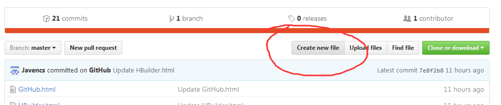
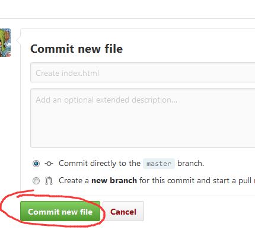
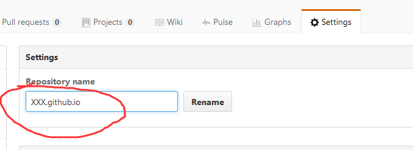
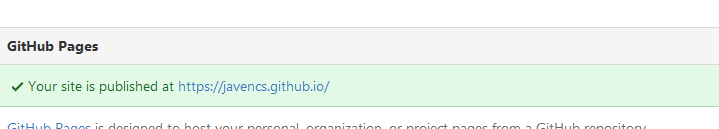
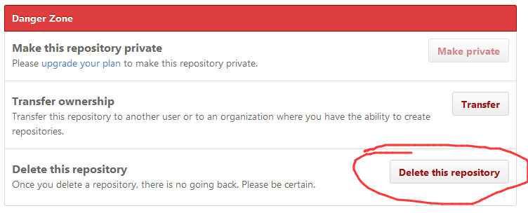
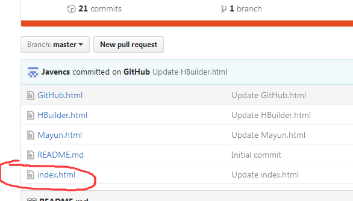
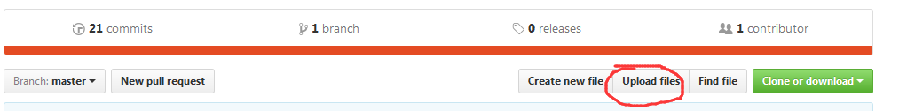

1.它可以作为一个版本控制系统和协作工具，用它来发布工作。
2.可以将项目存档，与其他人分享交流，并让其他开发者帮助你一起完成这个项目，支持多人共同完成一个项目。
3.创建自己的项目，并备份，代码不需要保存在本地或者服务器。
4.在GitHub页面，你可以直接开始，而不需要设置主机或者DNS。
GitHub的操作1.注册一个账号
2.登录之后新建文件
3.输入文件名（建议英文），然后就可以在下面输入你的代码,最后点击确认就可以了。
4.点击Setting,往下拉，输入你的项目名称+.github.io
5.还可以在Setting里找到你的网址。
6.还可以在Setting里删除你的文件。
7.GitHub的网页优先显示index.html。
8.GitHub还可以上传本地文件，文件夹要从客户端上传。
